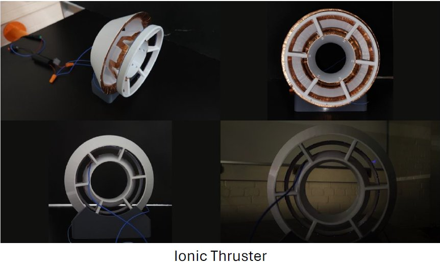

← All projects
Completed thruster assembly.
P-09 · mechanical, electrical
Ionic Thruster
A working thruster with no moving parts and no combustion, built to test whether corona discharge gap distance actually changes thrust.
- Sheet
- P-09
- Year
- 2023
- Discipline
- mechanical, electrical

(opens full size in a new tab)- Problem
- Does changing the distance of a corona discharge affect thrust?
- Scope
- Design and build a functioning ion thruster with no moving parts, then test the hypothesis directly.
- Role
- Researched ionised-air thrust, designed and assembled the high-voltage input, and did the mechanical design in SolidWorks.
- Result
- No — gap distance did not change thrust to any notable degree. A negative result, and a clean one.
- Next pass
- More emitter geometries, more needles for additional discharge points, and higher supply voltage.